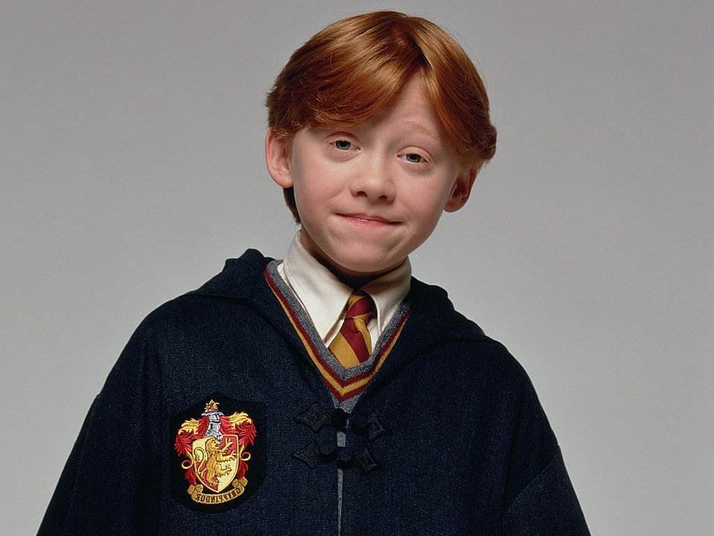

(prelevata da web con url assoluto)
(in locale con url relativo)
È il miglior amico di Harry Potter. Proviene dalla famiglia Weasley che è vista malamente dal resto della comunità dei maghi perché trattengono rapporti con i babbani.
|
 |
| 1^ immagine (prelevata da web con url assoluto) |
2^ immagine (in locale con url relativo) |